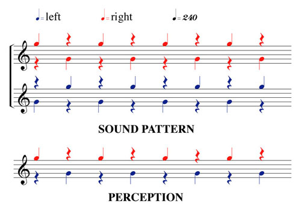
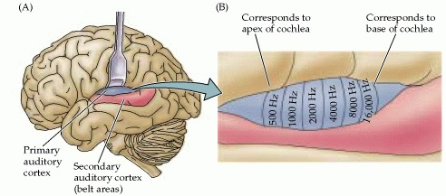
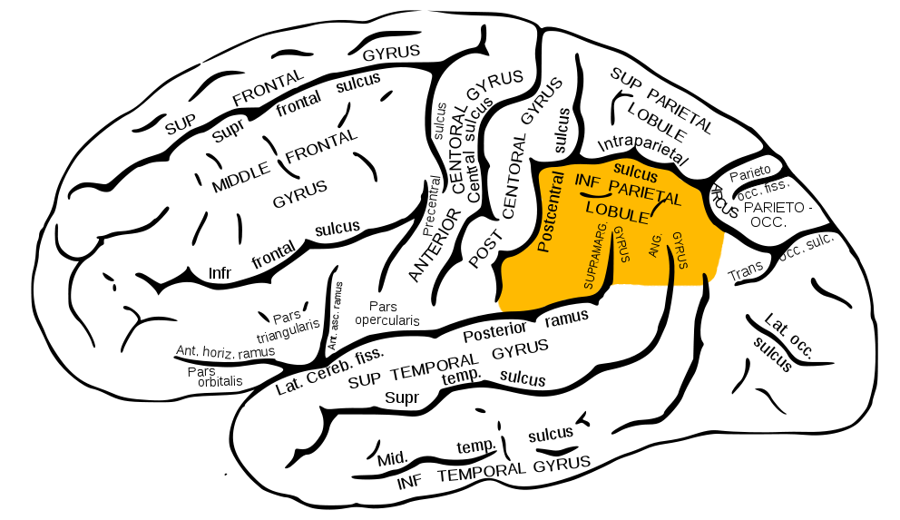

What is it?
In this illusion, you will hear a sequence of alternating tones in each ear.
How does it work?
It is likely that what you heard is different from the actual sound pattern.
Most often, people hear a repeating high tone in one ear and a repeating low tone in the other.
Other people report hearing different patterns, such as a periodic reversal of tones in each ear; studies show that left handed people are more likely to experience these variations1.
The real sound pattern is presented below along with the most common perception.

One hypothesis is that the illusion utilises the ‘what’ and ‘where’ pathways in the brain. The dominant ear determines the pitch of the perceived tone (for example, a high tone heard in the right ear) - the ‘what’ pathway. The ear that receives the high tone determines the location of the sound (in this example the tone would be localised to the right) - the ‘where’ pathway2.
Is this used anywhere?
The octave illusion gave rise to further studies on the ‘what’ and ‘where’ pathways. Functional MRI studies have sought to determine the specific location of these pathways and subsequently, better understand neural sound processing.
What is in the detailed research?
A 2018 study in Tokyo looked at identifying structures in the brain that are responsible for the illusory perception of the octave illusion.
They tested 43 individuals and split them into two groups; those that reported hearing the illusory effect and those that did not perceive the illusion but heard the actual pattern of notes.
The research team then conducted fMRI studies on each individual and played them the octave illusion whilst in the scanner.
The premise of the study was that by comparing the two groups they could identify neural structures that were involved in perceiving the illusory effect.
The research team identified several structures responsible for the octave illusion. Firstly, they found that the auditory cortex (area A1) was activated in both groups, which makes sense.
A1 is most likely responsible for detecting changes in pitch and this has been established in previous studies.

The research team suggested that the aforementioned ‘what’ pathway lies in the anterior auditory cortex and comprises the planum polare.
Activation of the planum polare was significantly increased in the illusory group and they suggest it is crucial for pitch determination.
The team also suggested the ‘where’ pathway lies in the posterior auditory cortex and includes the inferior parietal lobule.

Additionally, they looked at activation differences in the right premotor cortex (PMC).
This area is involved in processing sensory information and planning an appropriate motor response.
It had previously been shown to activate in response to rhythmic auditory stimuli.
The results of this study show that activation in the right PMC was greater in the non- illusory group.
The research team suggest that since this group does not perceive the illusion, they hear a rhythmic octave jump in each ear and this activates the PMC.
Possibly, the individual threshold for perceiving rhythm affects our perception of the octave illusion 3.
References